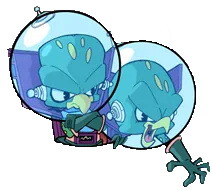

|
|
Latest site update: (Archive)
2021-03-25 - A new section with developer insight and design documents has been added.
Latest news: (Archive)
2021-03-21 - Hidden Palace releases a prototype version of Crash Twinsanity!
Consider supporting the website on Ko-Fi!

|
|
|
|  | AnTime Agony - v1.2 Author: Atomical Sloths Time Crates have appeared in Ant Agony. Make your way through the Evil Twins layer while time warps around you. Breaking time crates will change the flow of time and can activate doors, lower force fields, and makes for new challenges! Use this new time altering powers to collect all 6 gems! This mod will only correctly function on PAL PS2. Visit the Featured Mods section for more information. |